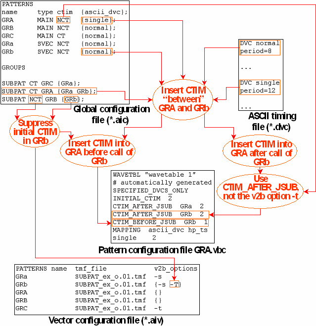

Inserting CTIM Between Patterns
If two patterns are executed successively in one sequencer run, a CTIM instruction must be inserted between them if they are associated with different timing sets. Within a (multi-port) burst, this is ensured by the default insertion of CTIM before the first vector of a pattern. With subpattern calls (JSUB instruction), the situation is more complex: If a timing set change is necessary before a subpattern call, another change is required after the call, and since the same subpattern can be called by several MAIN patterns, this return to the original timing must take place within the MAIN pattern.
The insertion of CTIM after a subpattern call can either be caused by the v2b parameter -t or by specifying the CTIM_AFTER_JSUB statement in the pattern configuration file. The -t option is global; if it is specified for a pattern, then CTIM is inserted after all JSUB instructions occurring in the pattern. It is also unconditional; CTIM is inserted even if the called pattern and the calling pattern use the same timing set. In contrast, CTIM_AFTER_JSUB applies to one specified subpattern, and causes the insertion of CTIM after the call only if it is actually required.
The insertion of CTIM before a subpattern call is usually unnecessary because a CTIM instruction is inserted by default before the first vector of the subpattern. You can, however, suppress this default insertion for the subpattern with the -T option of v2b. In this case, you can still cause a timing set change between the calling Main pattern and the called subpattern by inserting CTIM into the Main pattern before the subpattern call. The vector translation does this automatically if you insert a CTIM_BEFORE_JSUB statement for the respective subpattern into the pattern configuration file of the calling pattern, but again only if it is actually necessary.
Under certain conditions, the timing translation automatically inserts CTIM_AFTER_JSUB and CTIM_BEFORE_JSUB statements for a subpattern of a SUBPAT group (see The GROUPS Section) into the pattern configuration file of the calling Main pattern. One such requirement is that the ASCII device cycles of the calling pattern and those of the subpattern are associated with different timing sets.
Under this condition, a CTIM_AFTER_JSUB statement is inserted for the subpattern if
- the SUBPAT group has been set to CT, and the calling pattern to NCT.
If the calling Main pattern is set to CT, the timing translation causes the insertion of CTIM after the subpattern call by adding the v2b option -t to the Main pattern in the vector configuration file.
A CTIM_BEFORE_JSUB statement is inserted for the subpattern if
- the SUBPAT group has been set to CT, and
- the subpattern also occurs in a SUBPAT group that has been set to NCT.
Example
The following figure illustrates how the timing translation treats the different cases described above:

Note the following points in the figure:
- The complete information flow is only shown for the subpattern GRb, which belongs to both the CT group GRA and the NCT group GRB.
- For the subpattern GRa, default insertion of CTIM before the first vector is not suppressed in the vector configuration file, and accordingly the pattern configuration file only contains a CTIM_AFTER_JSUB statement for GRa.
- The Main pattern GRC is set to CT, so that the insertion of CTIM after the JSUB instruction is caused with the v2b option -t in the vector configuration file.